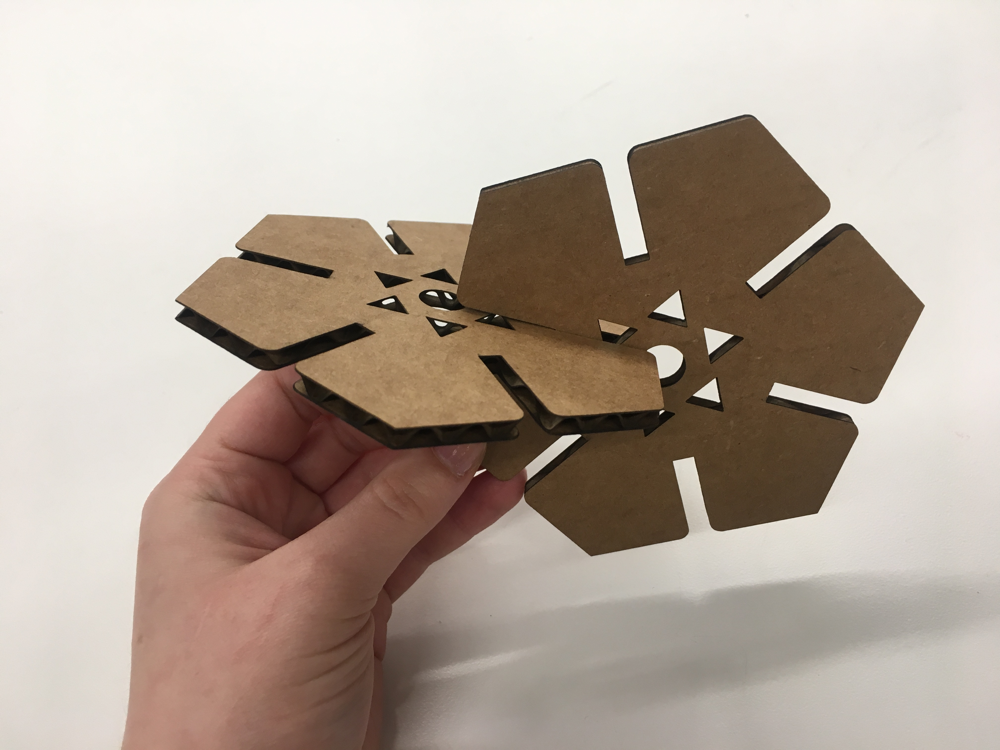

This week I was inspired by two machines I saw: four "fingers" tapping metal plates like a piano and a project by Rob of a doll hand hitting a steel sheet. I wanted to make a kinetic sculpture that could be controller by a user to move the different materials arranged horizontally along a limited path that will then be struck by an instrument spinning attached to a motor. This would create different sounds ideally.
I sawed off a 6 inch piece of circular wood, and created a cardboard holder. The ends of the wooden stick have (some material, either "a washer and nail" or "a piece of cardboard glued") on the sides to prevent unnecessary movement, and the breaking of the machine. The steel plates are also glued along the rod to provide a range of sounds.
The dc motor is placed on a platform, and then extends to a hitting instrument.
The goal was to make a musical kinetic sculpture.